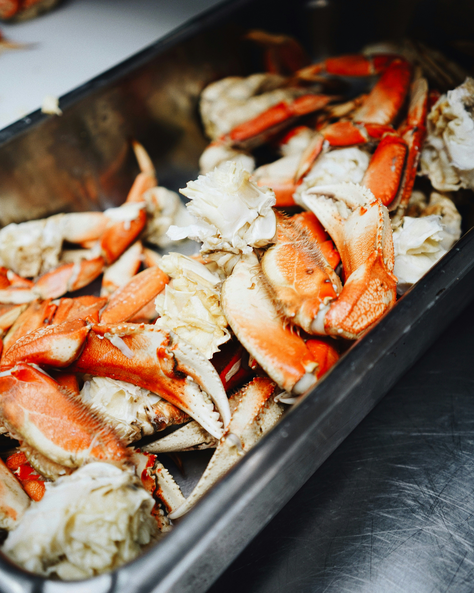
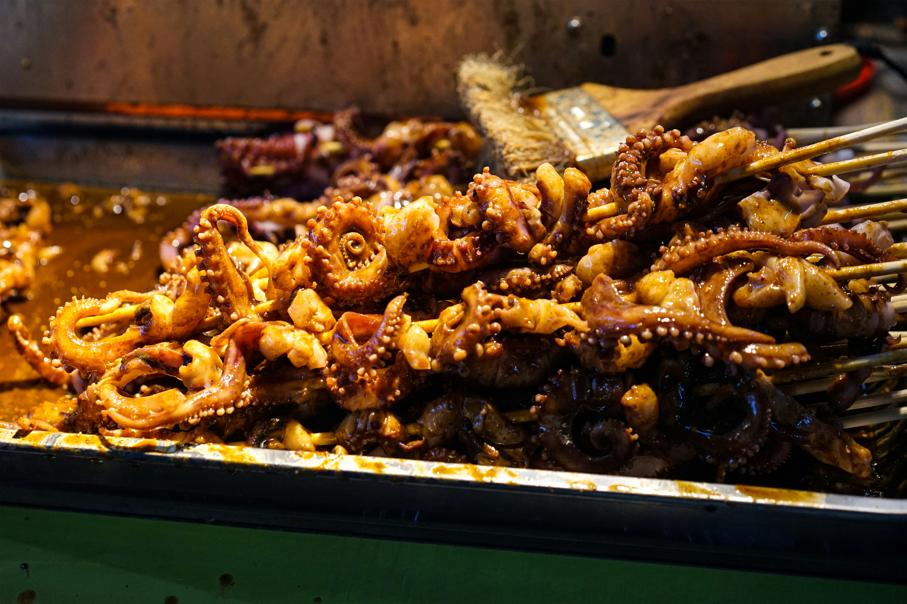
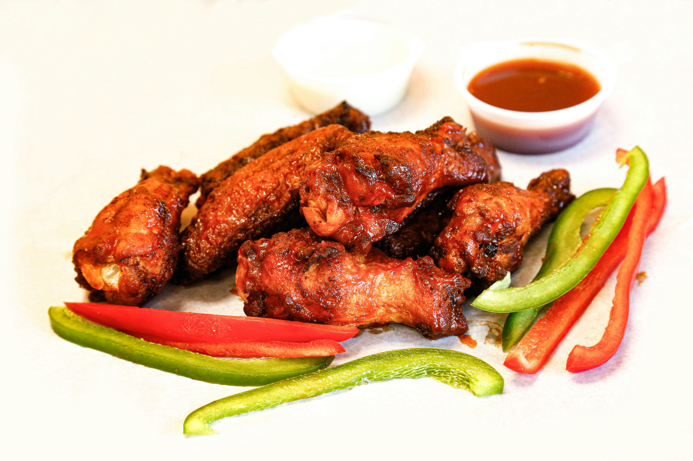
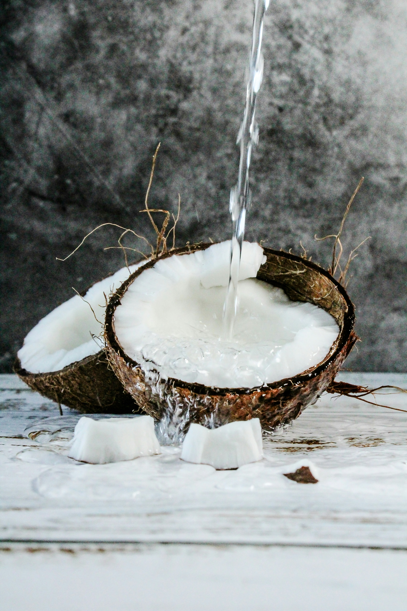

GASTRONOMIE
Presentation
La region d'Antsimo Andrefana qui se situe dans les regions du sud
sont tres reputer par leur gastronomie tant bien unique que savoureux
C'est dans cette region aux visage desertique que reside
leur gastronomie
,telle que:

LES FRUITS DE MER
Avec la peche qui dommine ce secteur
les fruits de mer sont la gastronomie les plus populaires

Les poissons
Dans une region ou la peche regne
le poisson est surrement le
la gastronomie numero 1

Les crabes
La gastronomie la plus populaire apres le poisson
le crabe est tres populaire dans cette region

Les calemars
Si vous visitez les plages de cette region
ils est impossible que vous voyez pas
les habitants en vendre
Apres les fruits de mer qui domine dans
la gastronomie de cette region on peut pas passer a coter de:
L'AGRICULTURE
Cultiver sur la terre ferme, cette region regorge
de plusieur fruit de la terre

Les maniocs
Souvent consommer par la population,
les maniocs se vend comme des petits pain

Les fruits du cactus
Pousses dans des endroit un peut eloigner les
cactus sont appeler par les locaux "raketa"

Les patate douces
Qui sont aussi appeler "bele", c'est surrement l'un des
qui sont le plus consommer
Au dela de la terre cette region est aussi reputer pour
leur elevages, ce qui fait qu'ils ont comme gastronomie des:
VIANDES
Malgres les pilleurs ou "dahalo" comme ils disent
ca n'empeche pas l'elevages, pour avoir:

Viandes de boeuf
Signe de richesse, la viande de boeuf
est tres populaire

Viandes de mouton
Viens souvent apres le boeuf

Viandes de volailles
Meme si ils y en a dans toutes les regions
ca n'empeche pas la region d'Antsimo Andrefana d'en consommer
Manger c'est bien, mais faut pas oublier de s'hydrater
car cette regions sont aussi reputer pour certainne boissins
BOISSONS
Ces boissons sont tous produits de plante qui pousse
dans cette region, specialement le baobab

Jus de baobab
On ne trouve les baobabs que dans cette regions

Coco
Populaire partout, l'eau de coco fait aussi effet
dans cette regions

Jus tamarin
L'une des boissons les plus adoree des touristes